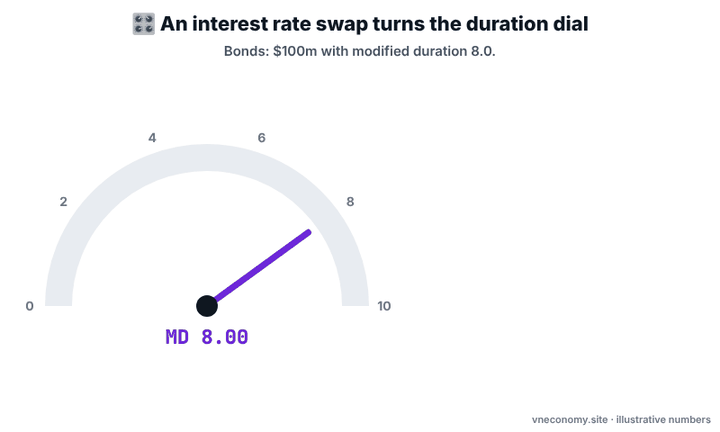
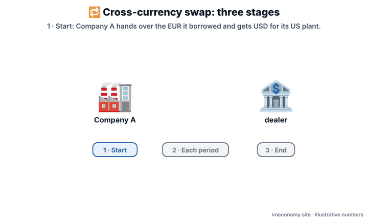
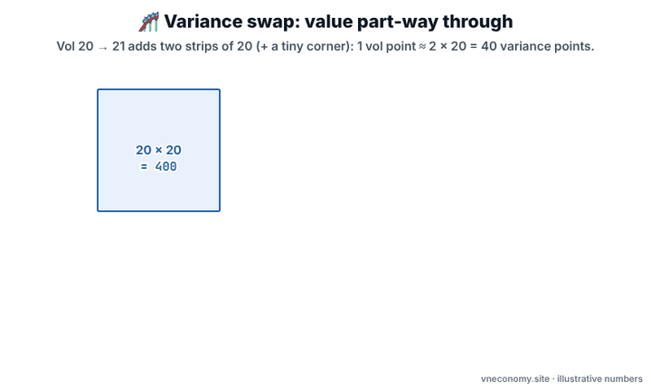

CFA study · Derivatives
Swaps, forwards and futures: the mechanics, step by step
Nine animated clips show what derivatives do to a portfolio: measure the risk you have, pick the risk you want, then fill the gap with contracts
Key points
- One sizing formula: contracts = (risk you want − risk you have) ÷ risk in one contract. A negative answer means sell, a positive one means buy. For bonds the risk is BPV; for stocks it is beta × value; for an interest rate swap it is duration.
- Building a swap: pay the cash flows of what you have, receive the cash flows of what you want. The notional is the amount you want to change. A currency swap exchanges principal at the start and the end at the same rate.
- Futures prices carry information: rate = 100 − price; fed funds futures give the chance of a Fed hike; at expiry a futures price must meet the spot price (VIX roll-down, the bond basis).
This follows the option payoff guide. Each clip runs about 20 seconds, then holds the answer for 4; beside it are the question, the formula, the answer and why it works. The colours never change: purple is what you have, blue is the target, orange is one contract, green is buy or receive, red is sell or pay.
1 · Sizing: how many contracts
Every sizing question takes three steps: measure the risk you have, measure the risk you want, then divide the gap by the risk in one contract.
Contracts = (want − have) ÷ one contract · negative → sell · positive → buy

Question
A bond portfolio has a BPV of 100,000. You want to cut it to 40,000. The cheapest-to-deliver (CTD) bond has a BPV of 90 and a conversion factor (CF) of 0.75. How many bond futures, and buy or sell?
Formula
N = (BPV target − BPV now) ÷ (BPV of CTD ÷ CF)
Answer
One contract = 90 ÷ 0.75 = 120 · N = (40,000 − 100,000) ÷ 120 = −500 → sell 500
Why it works
BPV is how much the portfolio loses when rates rise 0.01%. A sold bond future gains when rates rise, so each one scoops out 120 of that risk. Divide by the CF because one contract tracks 1 ÷ CF units of the CTD bond; forgetting it gives 667.

Question
Stocks worth $200m have beta 0.8 and you want beta 1.1; one index contract is worth $50,000 with beta 1.0. Then you must invest $4.6m of idle cash in the index (index 2,000, multiplier 500).
Formula
N = (β target − β now) ÷ β futures × value ÷ contract value · cash: N = cash ÷ (index × multiplier)
Answer
(1.1 − 0.8) ÷ 1.0 × 200m ÷ 50,000 = +1,200 → buy 1,200 · 4.6m ÷ (2,000 × 500) = 4.6 → buy 5
Why it works
Beta is how much the portfolio moves when the market moves 1%. Bought index futures add market exposure without buying shares. Cash has beta 0, so equitizing cash is the same formula with “now” = 0.

Question
A $100m bond portfolio has modified duration 8.0 and you want 6.0. A pay-fixed swap has duration −4.0. What notional, and which side?
Formula
Notional = (MD target − MD now) ÷ MD swap × value
Answer
(6.0 − 8.0) ÷ (−4.0) × 100m = $50m, pay fixed
Why it works
Receiving fixed is like owning a bond, so it adds duration; paying fixed is like issuing one, so it removes duration. To lower duration you pay fixed. The two minus signs cancel, so the notional comes out positive.

Question
A $200m portfolio is 70% stocks and 30% bonds; the target is 60/40, without selling anything. Stock beta 1.2, index contract $40,000 (beta 1.0). Bond duration 5.0; CTD BPV 75, CF 0.75.
Formula
Amount moved = 10% × 200m · equity N = β × amount ÷ contract · bond N = (MD × amount × 0.0001) ÷ (BPV of CTD ÷ CF)
Answer
Amount = $20m · equity: 1.2 × 20m ÷ 40,000 = 600 → sell 600 · bonds: 5.0 × 20m × 0.0001 = 10,000; 10,000 ÷ (75 ÷ 0.75) = 100 → buy 100
Why it works
Futures only change the slice you move. Selling index futures takes that $20m’s stock risk to zero, so it acts like cash; buying bond futures then gives that “cash” bond risk.
2 · Building a swap
A swap is two cash flows running in opposite directions. The leg you pay cancels what you have; the leg you receive is what you want. Questions usually ask for four boxes: tenor, cash flows, notional and settlement dates.

Question
Company A pays fixed coupons on a bond and expects rates to fall for the next 3 years. How should it build a swap so it pays floating instead?
Formula
Pay what you want to pay · receive what cancels what you already pay
Answer
Receive fixed, pay floating · tenor 3 years · notional = bond principal · settlement dates = coupon dates
Why it works
The fixed it receives from the dealer cancels the fixed it pays its bondholders, leaving only the floating it pays. Matching notional and dates makes the cancellation exact.

Question
Company A borrows cheaply in EUR at home but needs USD for a US plant and wants to pay interest in USD. Describe the swap at the start, each period and the end.
Formula
Start: give what you borrowed, get what you need · each period: pay interest in the currency you hold · end: reverse the start at the same rate
Answer
Start: pay EUR, receive USD principal · each period: pay USD interest, receive EUR interest (passed to the EUR lenders) · end: pay USD, receive EUR principal (repays the EUR loan)
Why it works
A currency swap is two loans to each other. Every EUR amount comes in from the dealer and goes straight out to the EUR lenders, so what is left is a USD loan. One exchange rate at both ends removes currency risk on the principal.
3 · Reading rates from futures prices
Interest rate futures are quoted as 100 − the rate. Selling them today locks a borrowing rate; the price of fed funds futures tells you how much the market is betting on a hike.

Question
(1) A borrower will take a loan in 6 months and sells rate futures at 97.00. Later the loan costs 3.80% and the futures are at 96.20: effective rate? (2) Fed funds futures trade at 96.20 and the target range is 3.50–3.75%: chance of a 0.25% hike?
Formula
Rate = 100 − price · effective = loan rate − futures gain · P(hike) = (implied − mid now) ÷ (mid after − mid now)
Answer
(1) Gain 97.00 − 96.20 = 0.80; 3.80% − 0.80% = 3.00%, the 100 − 97.00 locked on day one · (2) implied 3.80%; mid now 3.625%; mid after 3.875%; 0.175 ÷ 0.25 = 70%
Why it works
Futures prices fall when rates rise, so a borrower sells them and the gain pays for the dearer loan. The implied rate is a probability-weighted average of “no change” and “hike”, so how far it sits between them is the probability.
4 · Volatility and convergence
A variance swap pays on volatility squared, so one volatility point is worth about 2 × the strike in variance points. A futures price must equal the spot price at expiry: that is where the VIX roll-down trade and the bond basis trade make their money.

Question
You bought a 1-year variance swap: vega notional $2,000,000, strike 20. After 4 months realized volatility is 25 and the fair strike for the last 8 months is 22; the rate is 3%. What is it worth?
Formula
N_var = vega ÷ (2 × K) · E[var] = t/T × realized² + (T−t)/T × implied² · value = N_var × (E[var] − K²) ÷ (1 + r × (T−t)/T)
Answer
N_var = 2,000,000 ÷ 40 = 50,000 · E[var] = 4/12 × 625 + 8/12 × 484 = 531 · 50,000 × (531 − 400) = 6,550,000 · ÷ 1.02 = $6,421,569 (a gain for the buyer)
Why it works
The swap pays on volatility squared. Moving from 20 to 21 adds about two strips of 20 to the square, so 1 vol point ≈ 2 × 20 variance points: that is the 2K. Write volatility as 20, not 0.20, or the answer is 10,000 times too small.

Question
(1) Spot VIX 16.0, front-month futures 17.0, second-month 18.5, and the curve keeps its shape: which trade profits from roll-down? (2) A bond trades at 104 and futures × CF = 101: what is the basis trade?
Formula
At expiry, futures = spot · basis = bond price − futures price × CF
Answer
(1) Buy the front, sell the second: +1.5 − 1.0 = +0.5 (spot VIX cannot be bought) · (2) basis = +3 → sell the bond, buy the futures; they meet at delivery, earning 3
Why it works
A futures price must equal spot at expiry. On an upward curve each contract slides down as it ages, so selling the far one earns the slide. A positive basis means the bond is expensive against the futures, and the gap has to close by delivery.
Method and sources
All numbers are illustrative, not market prices. The formulas used in the clips:
- BPV = modified duration × value × 0.0001 · one bond futures contract ≈ BPV of the cheapest-to-deliver bond (CTD) ÷ its conversion factor (CF).
- Equity index futures: N = (target beta − current beta) ÷ futures beta × portfolio value ÷ value of one contract.
- Interest rate swap: notional = (target duration − current duration) ÷ swap duration × portfolio value.
- Rate = 100 − price · P(hike) = (implied rate − current level) ÷ (level after a hike − current level).
- Variance notional = vega notional ÷ (2 × strike) · value = variance notional × (expected variance − strike²) × discount factor. Volatility is written in points (20, not 0.20).
Personal study material, not investment advice.